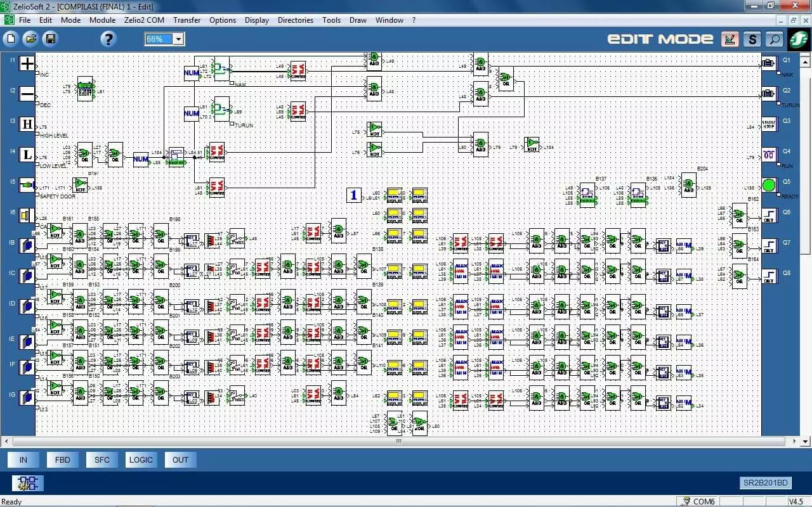
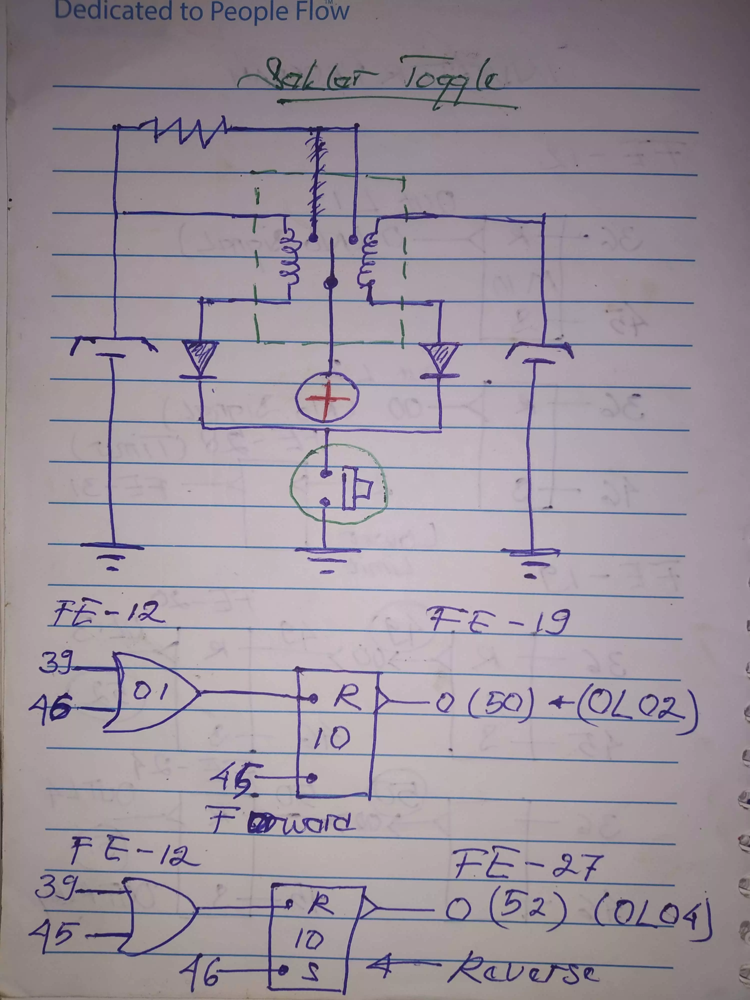
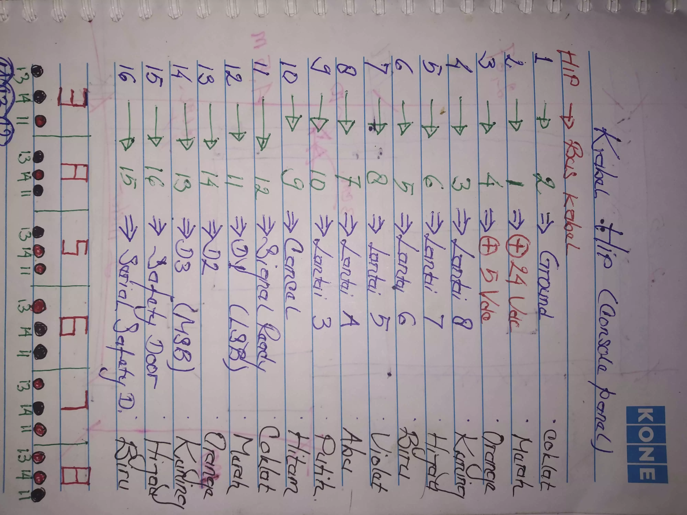
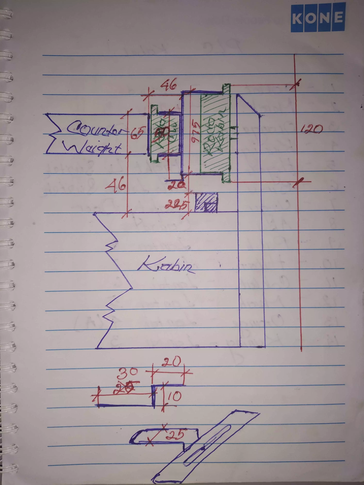
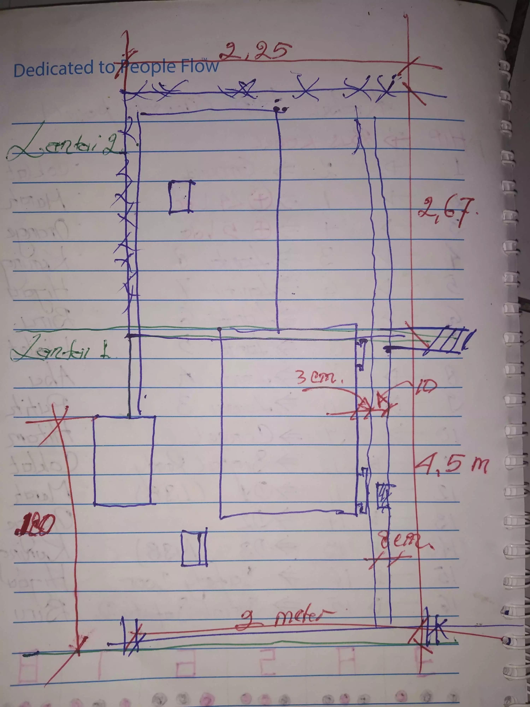

West
Point
Projek kendali sistem elevator (Dumb Waiter 8 lantai), dengan menggunakan PLC dan Inverter
My Role
Merancang sistem otomatis elektronik dan elektrikal Elevator dengan menggunakan PLC Zelio, Memprogram PLC Zelio dengan Block Diagram, Instalasi Sistem otomatis elektrikal & elektronika.
Team
Rohana (Electrical & Electronic Engineering, Leader Project), Zefa Shofihatul Qolbi (Electrical & Electronic Engineering)
Technology
Pada Project ini, kita menggunakan PLC Zelio, Inverter, Limit Switch (untuk sensor posisi Sangkar), Motor Traction.
How I Design whole program
Semua Konsep Rancangan pertama pada project ini saya tulis dengan pensil di kertas (Scratching), setelah semua konsep rancangan selesai, saya salin semua design dan mensimulasikan-nya pada software zelio. Dan saya sempurnakan semua rancangan dengan try & error.
How I Design Elevator Button
Prinsipnya sama seperti penjelasan di atas, yang membedakan adalah proses ini memakan waktu lebih banyak karena kerumitannya. Dengan dokumentasi yang terbatas, saya hanya bisa menunjukan beberapa catatan saja.
 How I Design Sensoric Position
Kunci utama dalam memposisikan sensor adalah pengukuran konstruksi yang presisi dan tepat, untuk menghindari melencengnya sangkar pada setiap lantai. Dengan dokumentasi yang terbatas, saya hanya bisa menunjukan beberapa catatan saja.
 